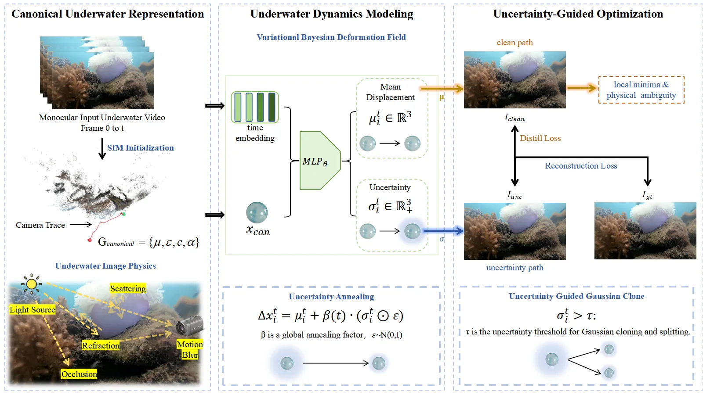
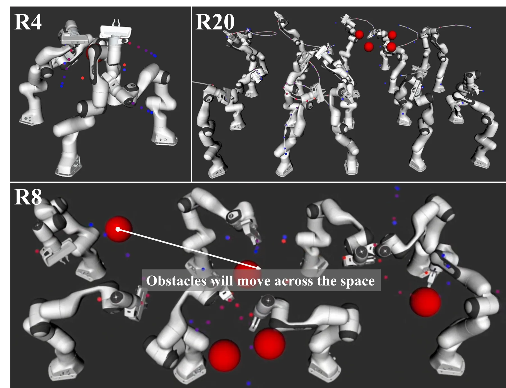
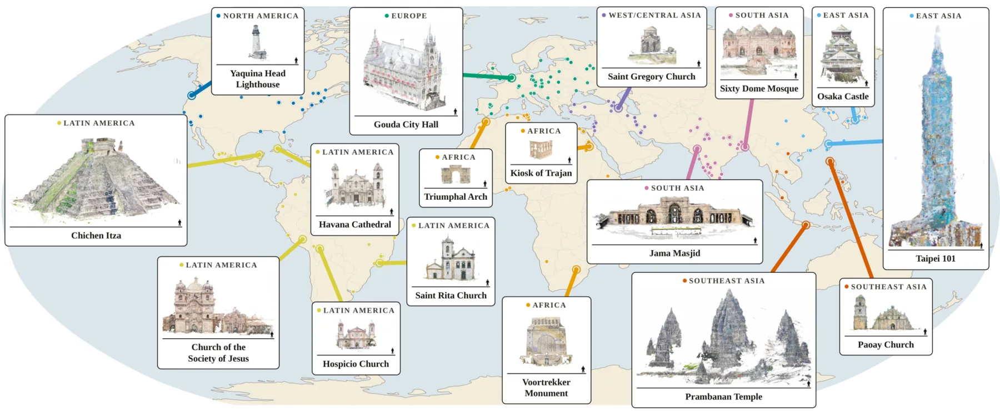

新论文 · 日期 2026-10-13 · score 19 · S层 · 3D/4D Spatial Perception · cs.CV
内容级别：完整单篇海报
作者：Tingjun Li, Yuxi Wang, Guoqiang Zhong, Zhaoxiang Zhang
评分 19/10
水下重建动态 3DGS变分推断位置方差重参数化采样随机退火自一致性蒸馏不确定性致密化UVEBDRUVA
一句话工作总结：PUGS 把水下动态 3DGS 的形变场从“一个位移”改成“均值 + 位置方差”：位移按 Δμ + β(t)(Δσ⊙ε) 采样，Δσ 用 ℓ1 稀疏先验约束，β 从 1 退火到 0；训练时并行渲染确定性路径与随机路径，用 stop-gradient 蒸馏把确定性路径拉向随机路径的中心趋势，推理时关掉采样只走确定性路径。UVEB 11 场景平均 30.85 dB（比 Defor…
动态 3DGS 通常用确定性形变场建模场景运动，隐含假设每个高斯只有一条几何轨迹。这个假设在水下会失效：光散射、折射、海雪与低能见度会在成像过程中引入大量物理歧义。本文提出 PUGS，学习水下成像固有的不确定性，并把它当作物理信号来引导动态场景表示。方法不再估计单一确定位移，而是把每个高斯的运动参数化为带期望形变与物理不确定性的概率分布，并通过局部重参数化采样轨迹，在训练中探索多个物理上可行的解；随后用不确定性随机…
Dynamic 3D Gaussian Splatting (3DGS) provides an efficient framework for dynamic scene reconstruction. Most existing approaches model scene dynamics with deterministic deformation fields, assuming each Gaussia…

新论文 · 日期 2026-10-15 · score 14 · S层 · 3D/4D Spatial Perception · cs.RO
内容级别：完整单篇海报
作者：Zhao Jin, Fengyi Dai, Yuetong Yin, Yunan Wang
评分 14/10
高斯置信传播因子图多臂规划GP 轨迹参数化随时推断事件触发重规划分布式优化一致性证明重线性化
一句话工作总结：DD-GBP 把多臂规划写成动态因子图上的 MAP 推断，用 GP 支撑状态参数化关节轨迹，为每个机器人建局部树图，只通过活跃链路异步传消息。触发式重规划时用 BFS 抽出受影响子网（有深度与节点数上限），并证明剪掉非活跃因子不改变门控目标、重规划前后轨迹变化有局部界、执行用的三次 Hermite 曲线正是 GP 条件均值。50 个四臂场景成功率 92.5%，对照 Syn-G…
在复杂动态环境中在线、安全地执行长时程多臂任务仍然困难。本文提出分布式动态高斯置信传播（DD-GBP），通过并行局部推断直接规划关节空间轨迹。统一的 GP 参数化把自适应规划时域、插值时刻因子与连续执行连在一起；每个机器人维护一棵局部树结构因子图，并在活跃的臂间链路上异步交换消息。动态子网重建与事件触发更新降低通信与推断开销，同时响应移动障碍。作者还给出局部推断精度、随时早停、触发重规划一致性与 GP 一致执行的理…
Safely executing long-horizon multi-arm tasks online in complex dynamic environments remains challenging. We propose a new distributed dynamic Gaussian belief propagation (DD-GBP) method that directly plans jo…

新论文 · 日期 2026-10-15 · score 13 · S层 · 3D/4D Spatial Perception · cs.CV
内容级别：完整单篇海报
作者：Minhyeok Roh, Minseo Lee, Jun Young Jeong, Byeonghyeon Lee
评分 13/10
动态高斯高斯分配种子注入时间偏置重定位FreeTimeGS多视图抬升快速小目标N3DVCMU Panoptic
一句话工作总结：方法建立在 FreeTimeGS 上，不动表示、只动分配。Seed Injection 把“帧差动态掩码 × 渲染误差”当种子图，从 8 个同步视角各采 48 个候选像素，用光线对最近点中点抬升到 3D，按光线距离排序后每帧最多注入 256 个种子（复用低透明度高斯，预算不变）；Temporal Biased Relocation 把目标高斯在各时刻的位置梯度归一化成时间分布…
动态高斯表示让高质量实时体积视频越来越可行，但剧烈运动仍会破坏重建：小而快的物体会消失，高动态区域的细纹理会丢失。简单延长训练或增加高斯数量往往仍无法恢复这些小目标。作者认为关键瓶颈不是表示容量，而是高斯基元被分配在何处、何时。现有分配策略依赖当前高斯位置，忽略了被重定位高斯的时空目的地。本文提出两个互补策略：Seed Injection 用时间外观变化与重建误差定位欠重建的动态区域，并通过多视图观测在几何合理的…
Dynamic Gaussian representations have made high-quality, real-time volumetric video increasingly practical, yet challenging motion can still break their reconstruction: small fast-moving objects may disappear,…

新论文 · 日期 2026-10-16 · score 12 · S层 · Geometry Foundation Models / 3D Foundation Models · cs.CV, cs.LG
内容级别：完整单篇海报
作者：Nicky Kriplani, Yiwen Zhang, Angelina Wang, Hadar Averbuch-Elor
评分 12/10
3D 基础模型基准评测地理多样性Chamfer 距离跨视图注意力免训练干预VGGTπ³Depth Anything 3
一句话工作总结：ArchWorld 用 396 个野外 landmark 场景（92K 图、64 国、8 个区域、平均 232 图/场景）建立带米制稠密真值的评测集，并在 VGGT、Depth Anything 3、π³ 三个 3DFM 上做按区域、按建筑类型的分解评测。整体中位 Chamfer 距离 π³ 0.154 m、VGGT 0.277 m、DA3 0.869 m，但 π³ 在东亚的…
互联网规模的 landmarks 照片集推动了 3D 视觉的进展，但对单次前馈估计场景结构的 3D 基础模型（3DFM）仍然很难。本文提出 ArchWorld：一个地理覆盖广、带丰富元数据的三维建筑 landmark 基准，用它系统分析当前 3DFM 的失败模式。作者发现模型误差随地理区域系统性变化，但这种差异只部分符合训练数据代表性这一常见公平性解释：区域特有的建筑特征与背景干扰同样在改变难度。基于这些发现，本文…
Internet-scale photo collections of real-world landmarks have driven progress in 3D computer vision yet remain highly challenging for modern 3D foundation models (3DFMs) that estimate scene structure in a sing…